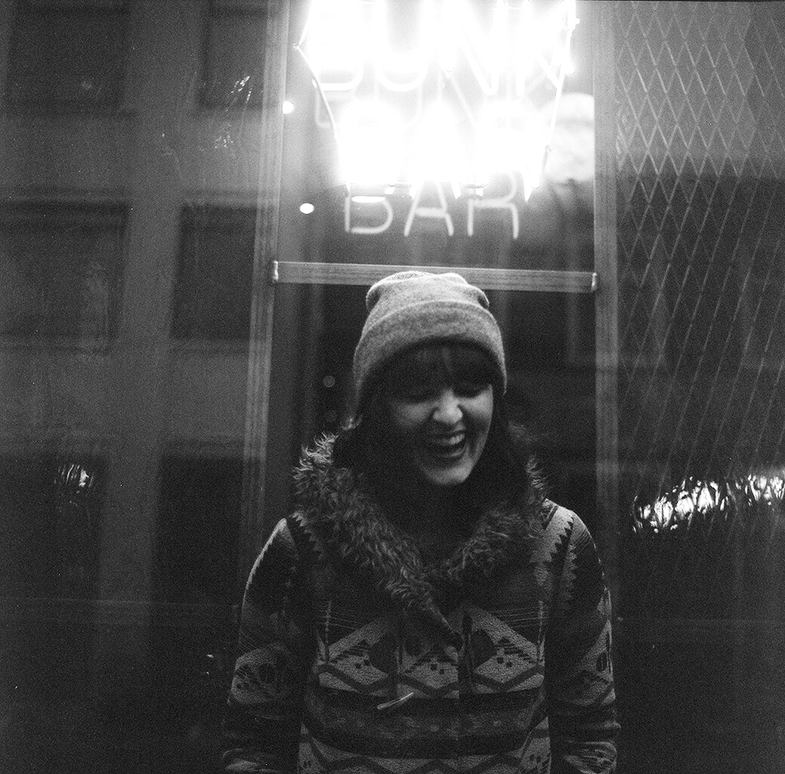

About Me

Christina Lynn Davis is a 29 year old graphic designer, photographer, illustrator, and all around maker of things who recently relocated from Portland, Oregon to Austin, Texas. She's currently in a bootcamp for web design that's about to kick her ass, but she's enjoying it.
When she's not working on projects or taking pictures, she's eating tacos, swimming in lakes and rivers, weebiking around taking in the sights, meeting new people, and constantly looking for inspiration.